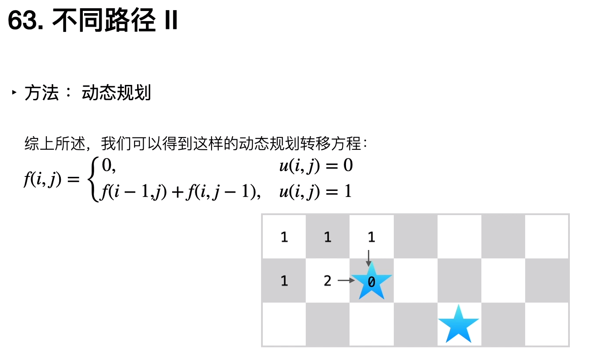

63. 不同路径 II
一个机器人位于一个 m x n 网格的左上角 （起始点在下图中标记为“Start” ）。 机器人每次只能向下或者向右移动一步。机器人试图达到网格的右下角（在下图中标记为“Finish”）。 现在考虑网格中有障碍物。那么从左上角到右下角将会有多少条不同的路径？
网格中的障碍物和空位置分别用 1 和 0 来表示。
示例 1：

输入：obstacleGrid = [[0,0,0],[0,1,0],[0,0,0]]
输出：2
解释：
3x3 网格的正中间有一个障碍物。
从左上角到右下角一共有 2 条不同的路径：
1. 向右 -> 向右 -> 向下 -> 向下
2. 向下 -> 向下 -> 向右 -> 向右
输入：obstacleGrid = [[0,0,0],[0,1,0],[0,0,0]]
输出：2
解释：
3x3 网格的正中间有一个障碍物。
从左上角到右下角一共有 2 条不同的路径：
1. 向右 -> 向右 -> 向下 -> 向下
2. 向下 -> 向下 -> 向右 -> 向右
示例 2：

输入：obstacleGrid = [[0,1],[0,0]]
输出：1
提示：
m == obstacleGrid.length
n == obstacleGrid[i].length
obstacleGrid[i][j] 为 0 或 1
输入：obstacleGrid = [[0,1],[0,0]]
输出：1
提示：
m == obstacleGrid.length
n == obstacleGrid[i].length
obstacleGrid[i][j] 为 0 或 1
思路
需要注意的边界条件
1.第一个或者最后一个有障碍物
2.如果第一行或者第一列有一个障碍物后续都是为-1不可走